Наука · журнал «ДентАрт» 2013 №1 (70)
Фактори багатоколірності зубів і реставрацій
FACTORS RELATING TO THE POLYCHROMY OF TEETH AND RESTORATIONS
Відомо, що зуби, особливо в передньому відділі зубного ряду, не є одноколірними. Ікла мають більшу кольоронасиченість і меншу світлоту в порівнянні з різцями. Показник кольоронасиченості зростає в напрямку від ріжучого краю до ясен, що, на думку більшості авторів, пов'язано з різною товщиною емалі і впливом оточення (фон порожнини рота, близькість ясенного краю). З віком багатоколірність зубів посилюється. При цьому колір зубів стає темнішим зі зміщенням у червоний бік.
На перший погляд, виконання реставрацій природного вигляду з урахуванням перелічених вище моментів передбачає використання матеріалів різних колірних відтінків для одного і того ж пацієнта. Проте враховуючи, що тканини зуба і реставраційні матеріали — це напівпрозорі оптичні середовища, добитися ефекту багатоколірності можна, використовуючи мінімальну кількість колірних відтінків (навіть один), маніпулюючи прозорістю відтінку і товщиною його шару.
Клінічний приклад
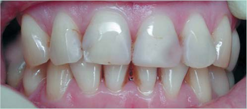
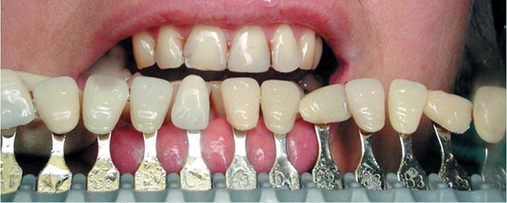
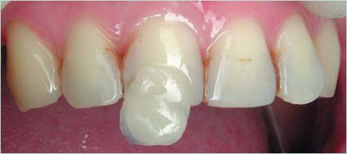
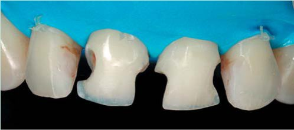
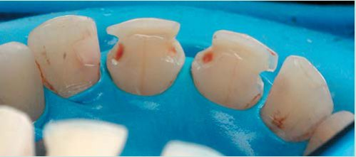
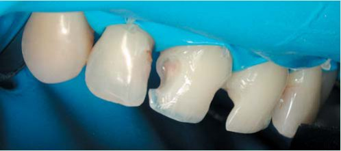
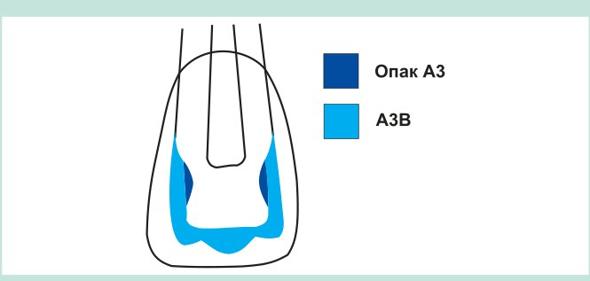
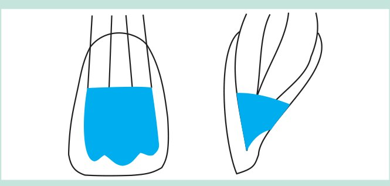
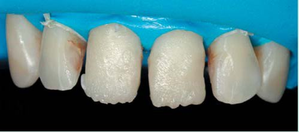
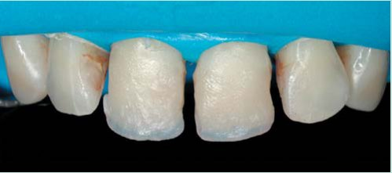
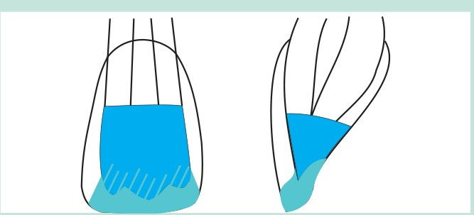
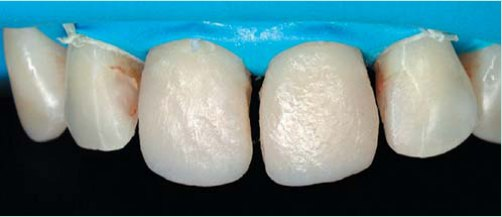
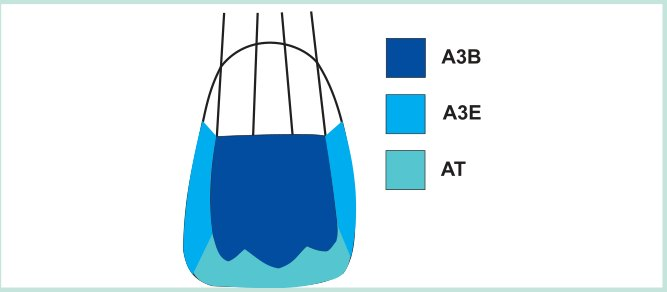
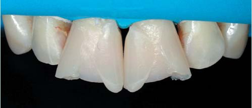
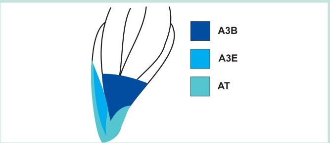
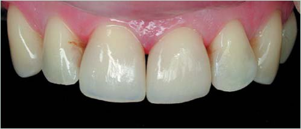

Обговорення
Колір будь-якого несамосвітного об'єкта визначається кількістю і спектральним складом світла, яке об'єкт відбиває. Інтенсивність світла, відбитого напівпрозорим об'єктом (напівпрозорим середовищем), дорівнює інтенсивності світла, що падає, за винятком світла, поглинутого усередині об'єкта, і світла, що пройшло через об'єкт:
Iвідб = Iпад – Iпогл – Iпройш (1)
Світло, яке відбивається межею поділу «повітря — об'єкт», — це світло джерела. Вважатимемо, що за своїм спектральним складом це світло близьке до світла джерела D65 (денне біле світло, яке містить усі довжини хвиль однакової інтенсивності). Від глянсової поверхні емалі зуба або реставраційного матеріалу світло джерела відбивається дзеркально. Світло, що падає дифузно, відбивається дифузно, а світло, що падає спрямовано, відбивається спрямовано. Світло, відбите межею поділу «повітря — об'єкт» (френелівське відбиття)1, не несе інформації про колір об'єкта. При його спрямованому відбитті (дзеркальний відблиск) воно маскує колір об'єкта, а при дифузному відбитті рівнозначно по всіх довжинах хвиль збільшує кількість світла, що виходить з його об'єму, тобто збільшує світлоту об'єкта.
Інформацію про колір об'єкта (середовища) несе в собі світло, яке виходить з об'єму. Кількість і спектральний склад такого світла залежить від коефіцієнтів розсіяння і поглинання, а також від товщини цього об'єкта або середовища. При проходженні світла джерела через розсіювальне і поглинальне середовище (зразок композиту, емаль, дентин) світловий потік слабне. Ослаблення світлового потоку відбувається за експоненціальним законом, і воно тим більше, чим більший коефіцієнт розсіяння (S) і поглинання (K) середовища.2 Ослаблення світлового потоку за рахунок поглинання означає його безповоротну втрату через перетворення на тепло. Ослаблення за рахунок розсіяння супроводжується поверненням частини світла, розсіяного назад, у бік джерела. Розсіяне назад світло — це світло, відбите об'ємом середовища. Воно містить ті довжини хвиль, які не поглинулися пігментами середовища і не пройшли крізь середовище за його межі. Інтенсивність світла, відбитого об'ємом, прямо пропорційна величині коефіцієнта розсіяння.
Урахування відстані між межами напівпрозорого об'єкта по ходу світлового потоку від джерела важливе для прогнозування його кольору. Колір зразка композиту, емалі і дентину зуба зберігає свою постійність незалежно від зміни кольору підкладки, яка перебуває із зразком в оптичному контакті, якщо розмір зразка по ходу світлового потоку не менше деякого значення (X∞), що називається нескінченною товщиною. Відношення відбитого світла (Iвідб) до того, що падає (Iпад) для об'єкта такої товщини — це так званий коефіцієнт відбиття об'єкта нескінченної товщини (R∞). Для композиту сума відбитих довжин хвиль, що відповідають (R∞), становить його справжній колір.
Справжній колір композиту заданий введеними в нього пігментами. Для надання відтінку реставраційного матеріалу більшої здатності відбиття в жовто-червоній зоні пігменти більше поглинають світло, відповідно, в синьо-зеленій зоні. Причому зі зменшенням довжини хвилі кількість поглиненого світла збільшується. Таким чином, величина коефіцієнта поглинання композиту збільшується обернено пропорційно довжині хвилі. Залежно від складу пігментів здатність відбиття матеріалу більше виражена в жовто-помаранчевій (відтінки B) або помаранчево-червоній (відтінки A) частині спектру. Від кількості пігментів в одиниці об'єму матеріалу залежить його кольоронасиченість. Від товщини зразка матеріалу за умови, що вона менша X∞, також залежить кольоронасиченість, оскільки товщина зразка — це довжина оптичного шляху світлового потоку в прямому і зворотному напрямку, на якому відбувається зміна його спектрального складу.
Якщо товщина зразка матеріалу менша X∞, то його колір не відповідає справжньому. При розміщенні такого зразка на білій підкладці в оптичному контакті з нею світлота збільшується, а кольоронасиченість у жовто-червоній зоні може збільшуватися або зменшуватися. Як приклад на мал. 6 подано одержані нами спектри відбиття від чотирьох зразків (завтовшки 0,08 мм, 0, 18 мм, 1, 18 мм і 9, 70 мм) композиту Естелайт (Estelite Σ, Tokuyama Dental) відтінку А3, а також від еталонів білого і чорного кольору.2 У таблиці 1 подано показники CIE L*a*b*, що відповідать цим графікам. Подані спектри і показники CIE L*a*b* відповідають джерелу світла D65.
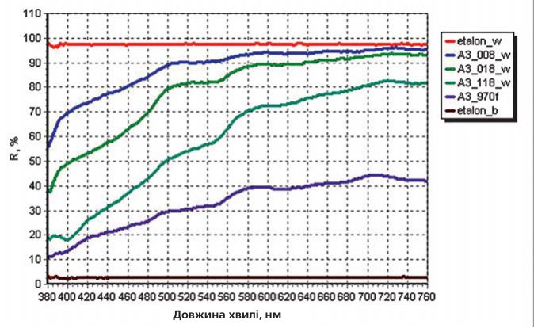
| Зразки | L* | a* | b* |
|---|---|---|---|
| etalon_w | 99,0299 | 0,0115 | 0,0684 |
| A3_008_w | 96,5452 | -1,5654 | 8,4209 |
| A3_018_w | 93,4886 | -2,5711 | 17,9166 |
| A3_118_w | 82,8668 | 2,4678 | 28,4773 |
| A3_970f | 65,2643 | 1,8368 | 17,6507 |
| etalon_b | 19,1072 | -0,0718 | 0,7713 |
Горизонтальність ліній, якими позначені спектри відбиття від еталонів білого і чорного кольору, говорить про те, що вони є ахроматичними кольорами. Будь-які відтінки (градації) сірого кольору з різною світлотою мають бути на графіці також позначені горизонтальними лініями, розташованими між спектрами білого і чорного кольору. Те, що значення коефіцієнтів відбиття від зразка білого кольору по всьому спектру відповідають 97,5, а не 100, свідчить, що частина світлової енергії поглинається зразком. У той же час коефіцієнти відбиття від чорного зразка приблизно 3% по всьому спектру говорять про наявність френелівського відбиття від межі «повітря — зразок». Ця складова відбиття має місце в усіх випадках при розгляді будь-якого об'єкта у повітрі.3
Колір зразка Естелайта нескінченної товщини (товщина 9,70 мм) — це геометрична фігура на полі графіка, обмежена віссю абсцис і нижньою спектральною кривою. Відповідно, простір поля графіка між спектральною кривою цього зразка і спектром еталону білого кольору — це світло, поглинене пігментами зразка. Кольори розташованих на білій підкладці зразків завтовшки 1,18 мм, 0,18 мм, 0,08 мм — це геометричні фігури, обмежені віссю абсцис і відповідними спектральними кривими. Площа кожної фігури є показником світлоти (L*), а форма спектральної кривої визначає співвідношення показників a* (червоний — зелений) і b* (жовтий — синій) колірного простору CIE L*a*b*. Показник кольоронасиченості (C — Chroma, Color saturation) розраховується за формулою:4
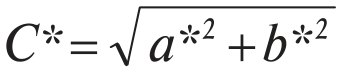
Обчислення за цією формулою, виходячи з даних таблиці 1, свідчить, що мінімальне значення кольоронасиченості — у зразка завтовшки 0,08 мм, а максимальне — у зразка завтовшки 1,18 мм. Цікаво зазначити, що значення кольоронасиченості у зразка нескінченної товщини дещо менше, ніж у зразка завтовшки 0,18 мм, тоді як при візуальному порівнянні цього не видно. Імовірно, тому в кольорометрії (у колірному просторі CIE L*u*v* — аналозі CIE L*a*b*) існує поняття психометричної кольоронасиченості (Psyhometric saturation — suv), яка дорівнює:4
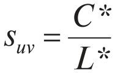
Обчислення за формулою (3) свідчить, що кольоронасиченість зразка нескінченної товщини більша, ніж зразка завтовшки 0,18 мм.
При розміщенні зразка на чорній підкладці кольоронасиченість значною мірою зменшується.2 Кольоронасиченість зменшується і за відсутності підкладки, але менше, ніж при контакті з чорною підкладкою. Цей факт зумовлений тим, що у будь-якому оптично неоднорідному середовищі, яке слабко поглинає світло, короткохвильове світло розсіюється більше, ніж довгохвильове, оскільки коефіцієнт розсіяння обернено пропорційний довжині хвилі. Ступінь такої залежності різний у матеріалів з різною прозорістю. У емалевих і дентинових відтінків коефіцієнт розсіяння обернено пропорційний першому ступеню довжини хвилі.5 У відтінків типу «incisal» (прозорих) коефіцієнт розсіяння обернено пропорційний не менше, ніж другому ступеню довжини хвилі. Це зумовлено тим, що характер розсіяння світла в дентинових і емалевих відтінках близький до багатократного, а в прозорих відтінках — до релєєвського.6 Тому при проходженні світлового потоку через зразок матеріалу завтовшки менше X∞ переважно відбувається розсіяння, а отже і об'ємне відбиття короткохвильового світла. При цьому довгохвильове світло (помаранчеве, червоне) розсіюється менше, проходить через зразок і, долаючи межу «зразок — повітря», виходить із зразка. Невелика частина світла, що досягло цієї межі (близько 5%), відбивається від неї і повертається в зразок (френелівське відбиття). Таким чином, має місце втрата якоїсь частини довгохвильового світла, відбитого об'ємом матеріалу. Величина цієї частини зростає при зменшенні коефіцієнта розсіяння і товщини зразка.
Для ілюстрації сказаного наведемо приклади у вигляді спектрів відбиття від зразків нанокомпозиту Філтек Супрім ІксТі (3M ESPE) різної прозорості завтовшки 1,05 мм, 2,10 мм і 3,15 мм.
На мал. 7 подано спектри відбиття від трьох зразків A3D згаданої вище товщини без підкладки. Найбільша площа поля графіка під спектральною кривою (світлота) і найбільші значення довжин хвиль у червоній ділянці спектру (кольоронасиченість) у зразка завтовшки 3,15 мм, а найменші — у зразка завтовшки 1,05 мм. Аналогічним чином один відносно одного розташовуються спектральні криві у зразків відтінку A3B (мал. 8) і відтінку A3E (мал. 9). При цьому в усіх зразків відтінку A3B показники світлоти і кольоронасиченості менші, ніж у відтінку A3D, а у відтінку A3E ці показники ще менші. У зразка завтовшки 1,05 мм відтінку A3E коефіцієнти відбиття в ділянці 700,0 нм, 546,1 нм і 435,8 нм, тобто в ділянці колірних стимулів RGB,7 майже однакові, що вказує на майже сірий колір зразка. Таким чином, на поданих графіках (мал. 7, 8, 9) зображені 9 різних спектральних кривих, які є дев'ятьма різними кольорами.
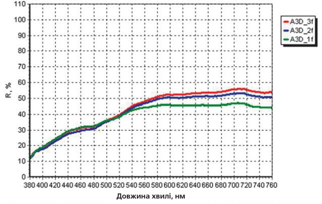
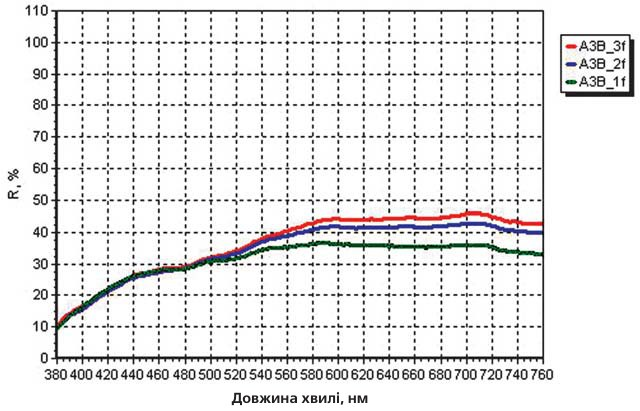
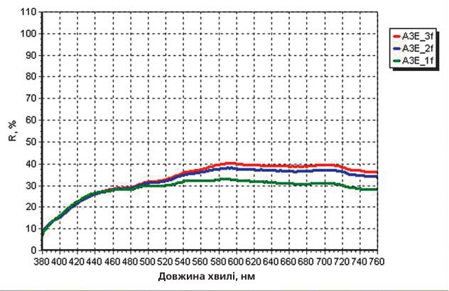
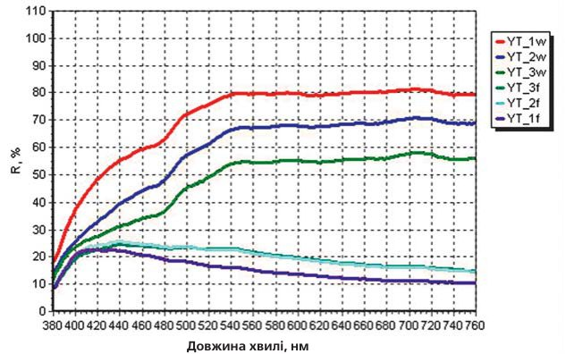
Найбільші втрати довгохвильового світла при відбитті об'ємом матеріалу видно на мал. 10, де подано спектри відбиття від прозорого відтінку YT. В оптичному контакті з білою підкладкою за будь-якої поданої товщини зразки демонструють жовтий колір (три верхні спектральні криві). Ті ж самі зразки без підкладки показують сіро-синій (товщина 2,10 мм і 3,15 мм) і сіро-фіолетовий колір (товщина 1,05 мм). При цьому спектри відбиття від зразків 2,10 мм і 3,15 мм майже співпадають. У колірному просторі CIE L*a*b* інверсія кольору від жовтого до сіро-синього означає зменшення показника L* і перехід від позитивних до негативних значень показника b* (таблиця 2). Інверсія кольору від жовтого до сіро-фіолетового означає ще і зменшення негативних значень показника a*, оскільки в колірному просторі CIE L*a*b* (круг Манселла) червоний колір розташований ближче до фіолетового, ніж до жовтого. Така інверсія кольору зумовлена тим, що характер розсіяння світла у прозорих відтінках близький до релєєвського і при цьому у композитів середні значення коефіцієнтів поглинання (K) менші, ніж середні коефіцієнти розсіяння (S), приблизно на порядок.5
| Товщина зразків, мм | L* | a* | b* |
|---|---|---|---|
| На білій підкладці | |||
| 1,05 | 90,5986 | -4,9141 | 16,8066 |
| 2,10 | 84,3395 | -4,9372 | 22,0764 |
| 3,15 | 77,3966 | -4,4820 | 21,8306 |
| Без підкладки | |||
| 3,15 | 53,5497 | -3,9972 | -3,9827 |
| 2,10 | 53,2476 | -3,3021 | -6,0037 |
| 1,05 | 46,2231 | -0,8960 | -11,3359 |
Відомо, що з віком структура емалі ущільнюється за рахунок мінералізації, а в дентині може бути зменшення просвіту дентинних трубочок. Це означає зменшення оптичної неоднорідності твердих тканин, а отже, зменшення розсіювальних властивостей і збільшення прозорості. Збільшення прозорості емалі означає збільшення впливу на колір зуба її підкладки, тобто дентину.
Звичайний дентин має виражену анізотропію розсіяння. Світло, що падає в напрямку дентинних трубочок, глибоко проникає і мало розсіюється, а світло, що падає упоперек дентинних трубочок, проникає неглибоко через більш виражене розсіяння.6 У різців в інцизальній третині поверхня зуба проектується на дентин, де дентинні трубочки орієнтовані переважно уздовж осі зуба. У середній третині трубочки відхилені до горизонтальної площини, а в пришийковій третині — ще більше. Таким чином, через оптичні властивості дентину світло, що падає на вестибулярну поверхню, здолавши емаль, найглибше проникає в дентин пришийкової третини і найменше — різцевої третини. Такий характер поширення світла зумовлений хвилеводними властивостями дентину.8, 9 Оптичне середовище «основна речовина дентину — просвіти дентинних трубочок» можна розглядати як систему оптичних хвилеводів (світлопроводів). Якщо світло падає на торці світлопроводів усередині їх апертурних кутів, то воно поширюється по світлопроводах.10 Такий характер поширення світла має місце в дентині пришийкової і середньої третини (фото 13). Якщо світло падає на торці світлопроводів поза апертурними кутами або упоперек їх напрямку, то воно не може поширюватися по них і значною мірою розсіюється. Через розсіяння довжина оптичного шляху в середовищі вкорочується. Скорочення оптичного шляху світлового потоку в дентині різцевої третини зумовлене ще й анатомічними особливостями, оскільки в цій ділянці у вестибуло-оральному напрямку шар дентину відносно тонкий (фото 14).
З поданих фотографій видно, що при падінні світла в ділянці середньої третини довжина оптичного шляху світлового потоку в дентині утричі перевищує таку в емалі. При падінні світла в ділянці різцевої третини оптичний шлях світлового потоку в дентині утричі менший, ніж увесь оптичний шлях від вестибулярної до оральної поверхні зуба. При цьому видно, що світіння (інтенсивність бічного розсіяння) лазерного світла у вестибулярній емалі і дентині більш виражене при падінні лазерного пучка в різцевій третині. Вище було сказано, що кількість пігментів в одиниці об'єму і товщина зразка матеріалу визначають кольоронасиченість цього матеріалу. Якщо виходити з оптичного закону оборотності,7 різниці оптичного шляху світлового потоку в дентині (фото 13, 14) і того, що носієм пігментів є дентин, стає зрозумілим, чому кольоронасиченість різця зменшується в напрямку від шийки зуба до ріжучого краю.
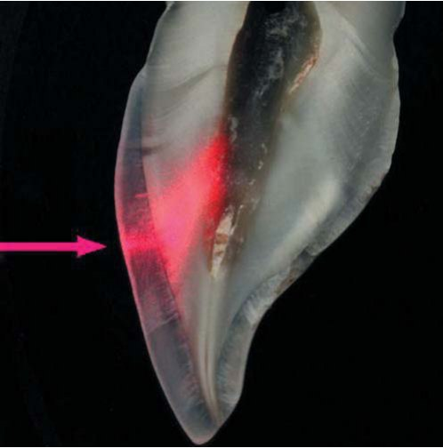
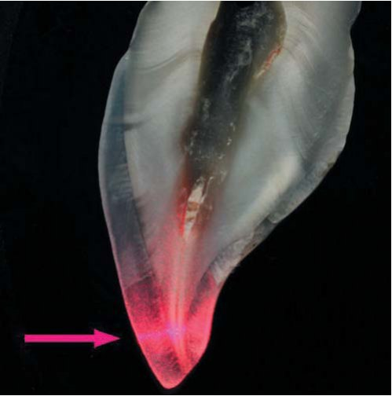
Зменшення кольоронасиченості в цьому напрямку може поєднуватися зі збільшенням світлоти.11 Це цілком можливо, оскільки несклерозований дентин різцевої третини через характер розташування дентинних трубочок і їх велику щільність значно більше розсіює світло. Проте можливий і певний ступінь облітерації трубочок у цій ділянці, наслідком чого є збільшення прозорості, зміна співвідношення пропускання — розсіяння світла і, відповідно, зменшення світлоти. Якщо немає стертя ріжучого краю, то підвищений ступінь прозорості емалі і дентину в ріжучій третині посилює багатоколірність різця за рахунок ефектів опалесценції і гало.12
У наведеному вище клінічному прикладі замінено старі реставрації і відкориговано форму зубів. Корекція форми центральних різців передбачала збільшення довжини коронки. Були використані напівпрозорі відтінки одного кольору (A3) і прозорий відтінок AT (аналог відтінку YT). Завдяки підібраній комбінації відтінків з малою опаковістю відтворено багатоколірність зубів, включаючи відтворення ефектів опалесценції і гало. Багатоколірність добре видно з комп'ютерного RGB-аналізу цифрових зображень з використанням редактора Jask Software® Paint Shop Pro 9. Наприклад, показники RGB цифрового зображення реставрованого зуба 11 (фото 15) мають такі значення у позначених зонах:
- R/G/B — 170/164/142;
- R/G/B — 165/160/141;
- R/G/B — 148/149/138;
- R/G/B — 113/116/112;
- R/G/B — 132/125/113.
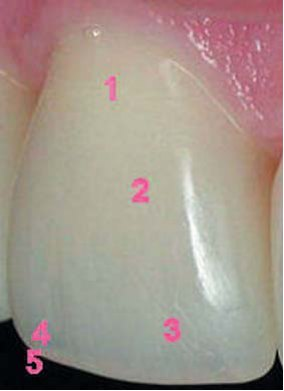
Про наявність ефекту опалесценції різцевої третини коронки свідчить її знижена світлота у поєднанні зі зміною співвідношення значень RGB у порівнянні з такими пришийкової і середньої третини. Слід зазначити, що ефект гало, який у стоматологів заведено називати «світінням» кромки ріжучого краю, таким не є. Це видно із зіставлення значень RGB зони 5 із зонами 1, 2, 3, де світлота більша. Можна сказати, що ефект гало — це прояв ефекту одночасного колірного контрасту, тобто сприйняття одного і того ж кольору за рівних умов освітлення різним через різне оточення.13 Контраст створюють два потоки світла, відбитого емаллю (природною або штучною) в зоні ріжучого краю. Світловий потік, відбитий об'ємом емалі над проекцією фасетки, утворюється на відносно малому оптичному шляху між вестибулярною і оральною поверхнею. Його інтенсивність відносно мала, а спектральний склад зміщений у короткохвильову зону. Світловий потік, що виходить в проекції фасетки ріжучого краю, формується за рахунок повного внутрішнього відбиття від поверхні фасетки, тобто на значно більшому оптичному шляху. Це призводить до збільшення інтенсивності відбитого світла і зсуву його спектрального складу в довгохвильову зону.14 Таким чином, ефект гало — це результат поєднання оптичних характеристик прозорої емалі або прозорих відтінків з формою ріжучого краю і лінійними розмірами зуба.
Висновок
Естетика реставрованих зубів має бути природною для людини конкретного віку і не викликати у спостерігача в цьому плані жодних сумнівів. Вікові зміни структури твердих тканин призводять до зменшення їх оптичної неоднорідності і розсіювальних властивостей. Внаслідок цього відбувається зміна кольору і посилення феномену багатоколірності зубів, що є нормою. При плануванні і проведенні реставрації таких зубів цілком виправдане застосування відтінків зі зниженою опаковістю. Колір природного або реставрованого зуба — це результат взаємодії поглинаючих і розсіювальних властивостей матеріалів і твердих тканин з лінійними розмірами і формою зуба. Виражена залежність розсіювання світла від довжини хвилі у напівпрозорих і прозорих відтінках робить важливим урахування розмірів і форми зуба, оскільки від цього залежить колірний результат.
Література
- Грисимов В., Хиора Ж. Френелевская оптика и эстетика переднего зуба // ДентАрт. –2010. –№ 1. –С. 19-26.
- Грисимов В., Хиора Ж., Шерстобитова А. Факторы, определяющие цвет композита в реставрации // ДентАрт. –2011. –№ 2. –С. 19-27.
- Грисимов В., Хиора Ж. Глянец и цвет реставрации// ДентАрт. – 2010. –№ 2. –С. 20-25.
- Ford A., Roberts A. Color space conversions. August 11, 1998 (b): http://www.poynton.com/PDFs/coloured.pdf.
- Molenaar R., ten Bosch J. J., Zijp J. R. Determination of Kubelka-Munk scattering and absorption coefficients by diffuse illumination // Appl. Opt. –1999. –Vol. 38. –№ 10. –P. 2068-2077.
- Грисимов В.Н. Оптико-морфологическое обоснование эстетической реставрации зубов светоотверждаемыми композитами. Автореф. дисс. … докт. мед. наук: 14.00.21 –стоматология, 01.04.05 – оптика / СПб гос. мед. ун-т им. И.П.Павлова. –СПб., 1999.
- Джадд Д., Вышецки Г. Цвет в науке и технике: Перевод с англ. –М.: Мир, 1978. –592 с.: ил.
- Грисимов В.Н. Характер распространения света в твердых тканях зуба: Деп. в НПО «Союзмединформ» 05.04.89, №17465. –10 с.
- Альтшулер Г.Б., Грисимов В.Н. Эффект волноводного распространения света в зубе человека // Докл. АН СССР. –1990. —Т.310, № 5. –С. 1245-1248.
- Саттаров Д.К. Волоконная оптика. Л.: Машиностроение, 1973. –280 с.: ил.
- Miller L. Organizing of color in dentistry // JADA. –1987. – Spec. iss. –P. 26E-40E.
- Winter R. Visualizing the natural dentition // J. Esthet. Dent. –1993. –Vol. 5, № 3. –P. 102-117.
- Агостон Ж.А. Теория цвета и ее применение в искусстве и дизайне: Пер. с англ. –М.: Мир, 1982. –181 с.: ил.
- Грисимов В., Хиора Ж. Эффект гало: направление световых потоков и цветовая палитра // ДентАрт. –2009. –№ 2. –С. 34-40.